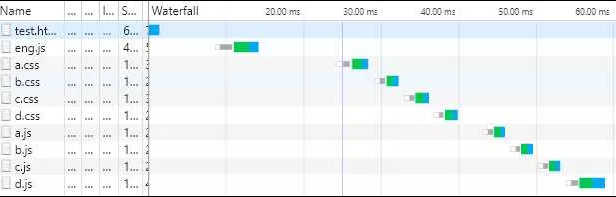

简介：
Eng 是一款 MVVM 模式超 轻量级的 组件化数据渲染 JS 本地插件 ， 仅有16kb 。 但却支持 React 、 Vue 、 Angular 全家桶套餐的主要核心功能 ， 因此是这三类工具外另一种更 轻量级的实现方式 ， 具有所有此类工具中 ， 最少 最简洁 最易的 学习曲线;
Eng 在大多数情况下与后台 99 %解耦 ， 按照 Eng 规则封装的Eng组件 ， 具有一次编写 ， 处处部署的特点 。 后台仅仅只需配置数据的请求接口 。 在使用本地数据的特殊情况下 ， 后台对前端工作的参与度近乎为 0 ;
Eng 主要特性：数据驱动(多向响应) 、组件闭包通信（动态）、 组件群发循环通信 、数据状态共享（跨页面,多向控制）、 组件require（自动按需加载js，css）、组件自请求数据、支持列表数据过滤 ，用以实现Excel数据统计计算或建立watcher关系、 组件封装方法缓存复用
Eng 相较于同类工具： 更少更简易的指令/方法实现同样的操作 ， 没有任何组件通信障碍 ， 后台无需专门复杂的路由控制器(1个ID1个接口) ，数据状态共享仅需简短的配置， 组件是完整闭包的全功能独立运作体。
Eng 的数据结构与dom层次划分， 互为结构视图 。 在深度开发下 ，提供异常明晰的规律逻辑思考模式 与 例推效应；
Eng 相关：
- Eng-Nos ： 1.7kb兼容所有浏览器的js 组件化纯数据渲染插件 ， 初次渲染拥有世界顶尖的性能 ，仅能执行被Eng-Drive编译后的文件。
- Eng-Drive ： Eng组件服务端渲染工具 ，仅能渲染纯 数据指令 ，其编译文件 可被Eng-NOS在本地端执行
版本说明：
- 0.8.x ： 略
- 0.9.x ： 略
- 1.0.0 ： (当前) , 组件方法自动缓存复用，暂时关闭 ，考虑到一些可能的极端问题 (开启 看更新通知）
- 1.1.0 ： (当前) 已修复 IE 下数据共享不能正确工作 , 解决一些关于数据共享的兼容性问题
须知（必看）：
- $_ 开头是 Eng 的专属命名域，Eng的数据键名 和 其它自定义属性方法，在任何时候都要避免以此开头
- {{obj.value}} 这种写法会破坏掉 Eng 的 数据与dom互为结构视图的思想，以及在深度开发下的规律逻辑思考模式 。 作者认为：规则规律的好处，远大于随性自由 ，因此Eng永远不会支持这种写法 ，具体参考e-base指令
- $_value : 仅允许输出：Number、Boolean、String 三种常量类型 ，也是基于上条原则 。 null ，undefined，NaN 数据请以String类型输出， 若非此，默认数据为 "" 空字符串
- Eng 组件开发施行闭包原则 ，支持闭包动态通信 ，正常开发模式下应当遵循此原则
基本指令：
e-base:(重要)
<div>
<div e-base='base'>
<p>{{value1}}</p>
<p>{{value2}}</p>
</div>
</div>
var data={
base:{
value1:'xxx',
value2:'xxxx',
}
};
{{value}} 的值是 基于 e-base 的对象 ，等价于 base.value1 ；base.value2
Eng 组件数据的里的 JSON 对象都是 e-base ， 与 dom 数据结构的 父子层次设计规划 完全对应 ，互为结构视图 。 这个规则在深度开发中，会形成规律思考逻辑，并且Eng所有的组件方法使用上都运行在一个统一的规律逻辑下，处处行为一致 ，具有 例推 效应
e-html:
e-html 是 dom.innnerHTML = html文本 ，对其子元素是覆盖操作，因此子元素若写有其它指令都会无效化
e-attr:
<div e-attr='class=value'>
....
</div>
<div e-attr='class=value?(css1):(css2)'>
...
</div>
<div e-attr='class=value2>=10?(css1):(css2)'>
....
</div>
<div e-attr='XXXX=value;title=value2;class=value3>=10?(css1):(css2)'>
....
</div>
e-attr : 可以写入几乎所有行内属性 ，支持三目运算，多个表达式之间用 “；”分号分隔。
当前版本 表达式 中不能有多余 空格，表达式的（）内不能有其它“；”分号和（）括号
e-id:
<div>
<div e-id='idName'> ...... </div>
</div>
e-id : 用于获取当前dom对象 ， 组件内所有方法的itmes参数上 ，通过 items.idName 的方式获取使用
e-event:
<div>
<button e-event='onclick:fun'>
click
</button>
</div>
...
event:{
fun：function(){
alert('chlick');
//console.log( this.$_data, this.$_gData ,this.$_items)
}
}
...
e-event = "onclick:fun" 与原生js 的关系等价于 dom.onclick=fun
e-event 绑定的事件 Dom 对象 可以访问修改当前 base（this.$_data）作用域 ,全局作用域（this.$_gData）的数据 ，并可以通过（this.$_items）使用当前组件的所有方法，以及操作访问所有关联组件
因此e-event 是万能dom事件绑定器 ， 可以实现几乎所有dom事件 与 组件 的互动
若要在碎片组件中使用 e-event 指令 , 需在碎片组件之前声明 : items.$_event.fun = function(){ … }
下面的e-input 和 e-change 指令就是基于此原理扩展实现
e-input:
{{value}}
e-input : 实时响应数据变化 ， 如关联有大量操作计算，建议用e-change
e-change:
{{value}}
e-for:
<div>
<div>
<p e-for='arr1'>{{$_index}}___{{$_value}}</p>
</div>
<div>
<div e-for='arr2'>
<p>{{$_index}}___{{v}}</p>
<div>
<p e-for='arr3'>{{$_index}}___{{$_value}}</p>
</div>
</div>
</div>
</div>
data={
arr1:['a','b','c'],
arr2:[
{
v:'arr2.v = 1',
arr3:[7,8,9]
},
{
v:'arr2.v = 2',
arr3:[11,12,13]
},
]
}
请注意：示例中，所有的 e-for元素都被一个空 div 父标签（绝对定位）包裹了
e-for 的 dom 元素依赖其父元素进行定位 ， 作者认为在深度交互的dom动态组件开发中 ，
父元素的设计具有绝对稳定性 。 因此e-for指令中生成的 dom 元素 默认从父元素内的子元素队尾开始追加
{{$_index}} 是 e-for 指令中的 数据元素 下标 输出方式
{{$_value}} 仅能输出基本数据类型： Boolean、Number和String类型 ，undefined、null等类型请用String代替 , 否则默认输出 "" 空字符串
Eng 中 e-for='xxx' 也是一种特殊的 e-base='xxx' base对象 ，因此在嵌套循环中 子数据也必须为JSON对象 。
如上 arr=[ { v:'xx',arr2=[x,x,x] } ] , 也就是说只能循环输出 基本数据类型 和 JSON 对象 ，如果一定要 arr=[ [x,x], [x,x] ] , 请自行 e-base=0，1，2 。
Eng 不会自动为这种数据格式做处理，再次强调：这种随性的写法 ，在深度开发中会破坏掉 Eng 的规律逻辑思考 和 例推效应 ， 因此永远不会支持这种写法。
当进行 array.push() , array.concat()….. 等等 操作修改 数据自身 ， 却无法响应的情况时 ， 仅需 data.array= 'update' ，就可实现数据更新 ，同理： Json对象 的数据 同样有效
参数 & 方法：
el:
var app=new Eng({
el: // "idName" || document.getElementById("idName");
.....
})
el ： 只接收页面 id 的 name 值 和 原生dom 对象
id:
new Eng({
el:xxx，
id:'idName' //唯一 ！ 组件闭包通信 ，跨页面数据状态共享的 身份识别依据 （没需求可以忽略）
.....
})
id : 组件身份命名， 唯一 。 组件闭包通信 ，跨页面数据状态共享的 身份识别依据 （没需求可以忽略）
cache:
new Eng({
el:xxx，
cache:{
a:xxx // 组件 自定义变量 缓存区 , 相当于组件的 let 作用域 , 通过组件的所有items.$_cache , cache 进行访问操作
b:xxx
}
.....
})
组件 自定义变量 缓存区 , 相当于组件的 let 作用域 , 通过组件的所有items.$_cache , cache 进行访问操作
relate:
new Eng({
el:....
id:...,
realte:[ 'idName1' , 'idNname2' ] // Type:Array 与其它 id 的组件相关联
})
realte : ['name1','name2' ] 。 将id 名字为 name1、name2 的组件相关联 ， 无论这两个组件当前是否已经创建
使用方式 ：当前组件任意位置方法内的 items 参数上 ，以 items.name1 、items.name2 的方式 ，就可以访问修改这些组件的所有数据 和 操作所有的方法 ，等价于直接其它组件的 items
items.$_relate 会返回当前所有已经正确关联的组件idName 列表 ， 对于 后关联的组件 ，使用时：直接 items.name 时应当判断对象是否存在 或 通过循环 items.$_relate 关联列表
require:
new Eng({
el:...
require:{
css:['./a.css' , './b.css' , './c.css','./d.css'], // 优先加载 css
js:['./a.js' , './b.js' , './c.js' , './d.js']
}
})
require : { css:[…] , js:[…] } 优先加载 css 部分， 之后 先执行 数据渲染展示 
showStage( items , cache):
new Eng({
el:....
require:{
css:[......]
},
showStage:function( items , cache ){
//do something
}
})
showStage 只有在 require 的 css 传入参数存在时 ，才会被执行 。 意思为：css 样式已加载完成 ，是否要优先做什么 ，不必等待其它js 的加载
template:
new Eng({
el:xxxx,
template:"<div>{{value}}</div>", //html 字符串模板
data:{
value:'xxx'
}
})
template ：html字符串模板 ， 当template参数存在时 ，生成的组件dom 会被填充为 el 的子元素
data:
new Eng({
....
data:{
//没什么好说的
}
})
watcher:
new Eng({
el:...
watcher:{
v:function(oldValue , newValue , items, cache){
<!-- watcher 特有 -->
// items.$_value
// items.$_destory
// items.$_caller
<!-- items 通有 不再特别说明 参看：items & cache -->
// items.$_wather // === watcher 作用一样
// items.$_watherFor // === watcherFor 作用一样
// .......等
},
'a.v':function(oldValue , newValue , items, cache){
//....
}
},
data{
v:'xxx',
a:{
v:'xxxx'
}
}
})
watcher : 注册的 观察者对象 会立即执行 , items.$_watcher 注册的 观察者对象 ， 在修改数据时触发执行
items.$_value ： 修改当前的输出值 items.$_value = '我要修改的值' ，当然你也可以通过 items.$_gData.v='xxxx' 修改
items.$_destory ：用于内部逻辑判断自我销毁当前 watcher对象 , 使用方式 ： items.$_destory = true ; 当然你也可以在任何时候位置的 items 参数上 ，
通过 items.$_watcher( { 'xxx' : null } ) 再次出册这个 watcher对象 为空的 方式进行销毁
items.$_caller ： 主叫机制 ， 用于避免 “wach噩梦” ， 在互相 watch 通信 和 多组件关联 watch 循环watch通信时 ，避免 死循环 和 watch 双方写入 判断逻辑 。
当items.$_caller = true 时 ，主叫机制开启, 从底层断开 watch 进入死循环的可能 .
watcherFor:(重要)
new Eng({
el:....
data:{
arr1:[1,2,3],
arr2:[
{
v:'',
arr3:[7,8,9,10]
}
]
},
watcherFor:{
arr1:function( items ,cache){
//items.$_allow
//items.$_data
//items.$_gData
//itesm.$_forData
//items.$_index
//items.$_pos
//items.$_gIndex
//items.$_watcher
//items.$_gWatcher
//items.$_items // 通用 items ， watcherFor里 的items是个特殊的items
}
}
})
watcherFor 可以实现 Excel 的函数运算 ， 如果你想深入了解的话 ， 排序功能 之后的更新增加
watcherFor 在对象建立时立即执行数据过滤 , items.$_watcherFor注册后 ,修改数据时执行 , 或通过 data.array='updata' 触发
Array 数据类型 ，进行push() 等等操作数据自身而无法响应的情况时 ，仅需执行 data.arrray = 'update' 即可
items.$_allow : 是否允许允许当前数据通过 ，默认为 true ，当修改为 false 时 该条数据不会渲染到页面
items.$_data : 当前被循环的数组元素数据
items.$_gData : 组件全数据
itesm.$_forData : 当前被循环的数组 ，当 $_data 为非引用数据类型时 ，可根据 items.$_index 下标进行修改
items.$_index : 当前被循环的数组元素数据的下标
items.$_pos ： 当前被循环元素的多维下标 , 在嵌套循环中使用 ，例: [1 ,2 ] 表示： 当前元素 是父元素下标为 1的元素 的 子元素的下标为2的元素
items.$_gIndex : 该循环体系在整个组件的所有循环体系的位置 ，暂时忽略一般用不到
items.$_watcher：基于当前base路径地址 注册 watcher ， 自动忽略前置路径 ，用于循环内部 实现 watcher 的特殊应用场景
items.$_gWatcher:普通 watcher方法 ，用于循环体系外的数据 与 当前数据 建立 watcher关系
items.$_items ： 通用属性方法的 items , 不是watcherFor 里这个特殊的 items
created:
var app = new Eng({
el:...
data:....
created:function( items , cache ){
// 组件生成后 ，所有的相关编程 都应当写在created内 ，
// 当然你非要写在这个对象外之后 ， 不遵守Eng 闭包规则 也可以
// 那样的话 ，操作组件的内部方法 ，你需要把items参数传递出去
// app 仅能修改数据
}
})
$_setToSelf:
new Eng({
el:....
data:...
created:function( items , cache){
var fragment = "<div><p> {{v}} </p></div>";
var data={
v : "$_setToSelf 生成的碎片组件 不支持数据响应"
};
var dom = items.$_setToSelf(data, fragment );
document.body.appendChild(dom);
}
})
碎片组件模板中 ， 不支持写入 e-id 和 e-for 指令 ， 碎片本身 可以放置页面各处
$_setToGlobal:
var app = new Eng({
el:....
data:{
a:1,
}，
created:function( items , cache){
var fragment = "<div><p> {{v}} </p></div>"; //碎片组件html字符串模板
var data={
v : "$_setToGlobal 生成的碎片组件 支持数据响应 "
};
var dom = items.$_setToGlobal({
el: fragment,
key: "base", // 放入组件 data 数据中的 键名
data: data, // 碎片组件的数据
base: "", // 可忽略 ， 忽略下默认添加到根路径
});
document.body.appendChild(dom);
// 修改 app.base.v 的值 会响应到页面
console.log(app||items.$_gData);
/*
data:{
a:1,
base:{
v:'$_setToGlobal 生成的碎片组件 支持数据响应'
}
}
*/
}
})
碎片组件模板中 ， 不支持写入 e-id 和 e-for 指令 ， 碎片本身 可以放置页面各处
base : 路径非忽略的情况下 ， 必须基于已有事实 数据路径
ajax:
new Eng({
el:....
ajax:{
type: // 可忽略 ， 默认： get
dataType： // 可忽略 ， 默认： json
url： // 数据接口地址
data：{
id： //组件id 自定义的组件身份识别数据 ，这只是示范
},
success:function(data , items){
items.$_addData(data); //添加数据的方法
},
error:function(err , items){
}
}
})
Eng的 ajax 方法仅仅是个简易的ajax 数据请求方案 ， 所有参数 如示例中 。 不做强制使用限制
使用其它三方 ajax请求方案时 ， 示例中的 items.$_addData 是 添加数据的使用方式
其它时候 ,可以通过 items.$_ajax({..}) 使用
暂不支持 Jsonp , 因为只是个辅助功能
items & cache ：
items 和 cache 参数 存在于 Eng 组件的 watcher，watcherFor，created ，ajax，showStage 和 e-event绑定的Dom对象， 任何需要可做逻辑判断操作的执行方法体中
items 仅在watcher，watcherFor 中有所 些微 区别 ，其它属性方法功能列表一致
items 是访问（realte）关联组件的任意门 ， 可以从任意一个组件指向另一个组件. 例:items.app1.app2.app1.app3.app1 (这些组件有相互relate的话)
cache 是组件内部的let 作用域 ，用于组件方法间 逻辑判断 自定义变量的 全局访问缓存区 ，等价于 items.$_cache
组件封装 ：
组件封装是为了使用 ， 数据状态管理（跨页面）和 一次编写处处部署 的情况 而进行的封装操作
//封装模板 ,除了命名规则 ($_ 加 id), 其余参数可自行定义
$_XXXX=function(cfg){ /* $_ 加 XXXX (必须 !! 当前版本为全局函数 ,考虑到使用便利性 和 Eng闭包不用担心变量污染 ) */
var template=""; //组件html 文本模板 ，可忽略（外部有提供的话）
var css=""; //组件 css 样式文本 ，可忽略 （外部有提供的话）
if(cfg.css)Eng.addStyle(css); // 是否使用 封装内 css 样式文本
new Eng({
el:cfg.el,
id:cfg.id,
relate:cfg.relate,
require:cfg.require,
template:cfg.template||template,
data:cfg.data,
ajax:cfg.ajax，
//------ else User-defined data ------
created:function(items , cache){
//组件 私有自定义数据编程区
}
});
};
数据状态共享 ：
// 使用配置 完整参数 参考列表(可自定义)
var config={
app:{ //app 应与封装命名 $_xxx 的xxx部分同名
el:... , // 页面已有 idName 或 dom对象 ，组件生成后的填充目标
id：'app', // id：的app与app应同名 ，注意命名合法性 ， 若不打算使用 relate 组件关联通信 和 数据共享 可忽略
relate:[], // 与 app 关联的组件id 列表 ，无需要 可忽略
require:{ // 组件依赖的css 和js ， 不需要组件自行加载 时 可忽略
css:[],
js:[]
},
data:{}, //组件的本地数据或模拟数据 ， 存在时不会执行 初始化 ajax 请求 ，不需要可忽略
template:..., //组件的文本模板数据 ， 若封装组件内未封装 ，则需要提供 ， 使用封装内时可忽略
ajax:..., //组件 初始化 ajax请求组件数据的操作 ，不需要可忽略
css：...， //布尔值 ， 是否使用封装内的 css 样式 ，true 是使用 ，false时可忽略， 此时页面已有样式中应提供
cache：... //布尔值 ， 是否缓存组件封装方法和配置 ，新的页面自动复用 ，不再向服务器请求 （当前版本关闭,开启看更新通知）
},
app2:{
....
},
.....
// 已上不打算做封装可忽略 ,参数可自定义 ,非必需 , 以下为 数据共享配置格式 ~~~~~~~~~~~~~~~~~~~~~~~~~~
$_sharedData:{ //所有参数
'<=>': ['app'] //双向约束同名（id）组件全数据共享 ，id列表
'=>' : ['app2'] //单向约束同名（id）组件全数据共享 ，id列表
'<?>': [] //双向约束任意id组件 ,共享 指定路径数据 到 指定路径
'?>' : [] //单向约束任意id组件 ,共享 指定路径数据 到 指定路径
'=' : [] //只接收同名组件id 数据 ，不对外约束
'?=' : [] //只接收指定id组件的指定路径数据 ，不对外约束
}
};
Eng.init(config);
<=> : 使用实例
// a 页面 配置~~~~~~~~~~~~~~~~~~~~~
var cfg={
app:{
el:document.body,
id:'app',
css:true
},
$_sharedData:{
'<=>':['app']
}
};
Eng.init(cfg); //使用方式
// b 页面 配置~~~~~~~~~~~~~~~~~~~~~~~~~~~~~
var cfg={
app:{
el:document.body,
id:'app',
css:true
},
$_sharedData:{
'<=>':['app']
}
};
Eng.init(cfg);
打开下面的两个页面 ,你会发现 两个页面的数据无论怎么修改 , 组件的数据都是一样的
页面a
页面b
=> 与 = : 使用实例
// a 页面 配置
'=>':['app']
// b 页面 配置
'=':['app']
打开下面的两个页面 , 页面b的数据始终受到页面a 的约束 , 即使修改了, 刷新 或 切换页面后也会被还原
页面a
页面b
<？> : 使用实例
// a 页面 配置
'<?>':['app1.a=app2.b'] // 当前页面的 app1.a 的值, 赋予其它页面 app2.b ; app1 app2为组件id
// b 页面 配置
'<?>':['app2.b=app1.a'] // 当前页面的 app2.b 的值, 赋予其它页面 app1.a ; app2 app1为组件id
不能有多余空格 , ['app1=app2']当前版本是非法的 ,只允许指定路径数据 赋值给 指定路径 ,不允许全复制
打开下面的两个页面 , 会发现 页面a 组件的 app1.a 值 和 页面b 组件的 app2.b 值 始终相等 , 其它值不受影响
页面a
页面b
?> 与 ?= : 使用实例
// a 页面 配置
'?>':['app1.a=app2.b'] // 当前页面的 app1.a 的值, 赋予其它页面 app2.b ; app1 app2为组件id
// b 页面 配置
'?=':['app2.b=app1.a'] // 当前页面的 app2.b 的值, 赋予其它页面 app1.a ; app2 app1为组件id
不能有多余空格 , ['app1=app2']当前版本是非法的 ,只允许指定路径数据 赋值给 指定路径 ,不允许全复制
打开下面的两个页面 , 会发现页面b 的 app2.b 的值始终受到页面a 的app1.a的值约束 , 即使修改了, 刷新 或 切换页面后也会被还原
页面a
页面b
总结：
- Eng 学习上偏重于理解其逻辑规律 , 运用上偏重于技巧 , 可以实现所有同类工具的页面级操作 以及 数据操作 . 如果您觉的此部分功能不全 , 请发散思维 ,自行扩展.
- Eng 可开发通用的组件工具库 .